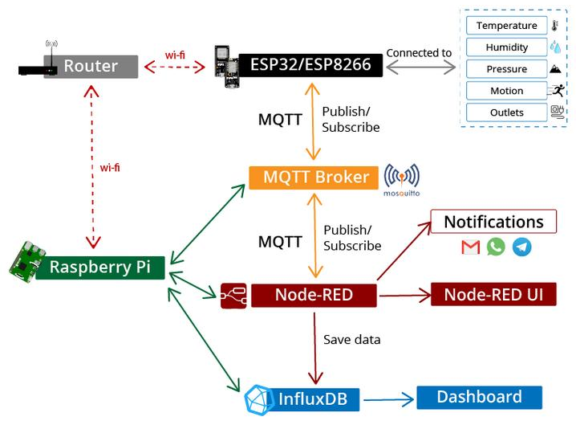
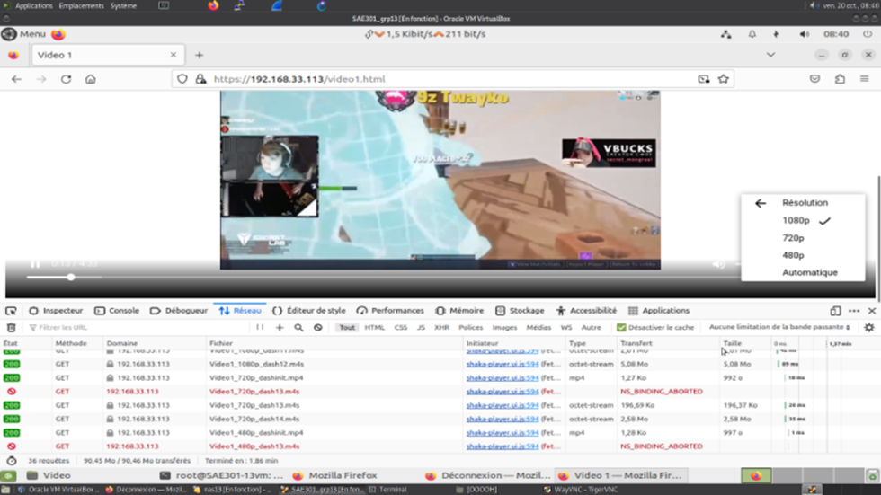
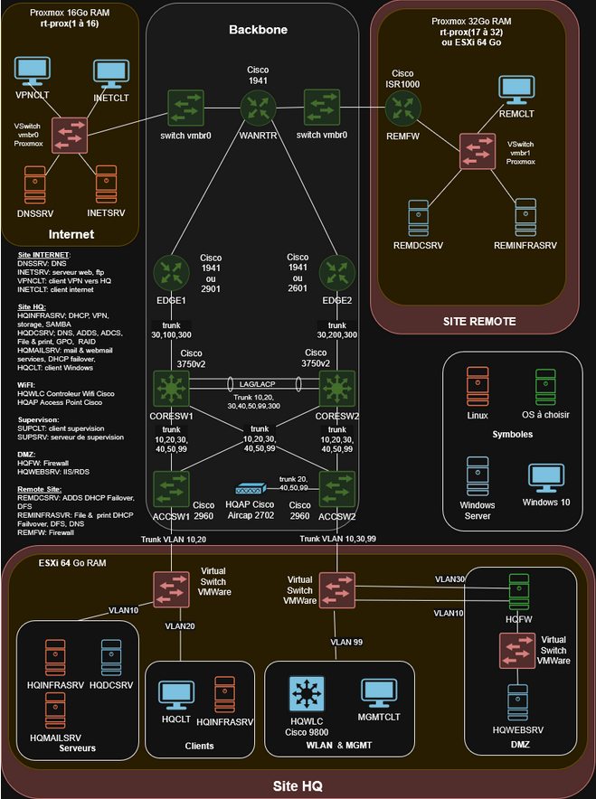

SAÉ 4.IOM.01 | IoT Datacenter
Supervision d'un datacenter par zones : programmation de capteurs IoT, traitement via Node-RED et stockage InfluxDB.
Découvrez une sélection de mes réalisations académiques et personnelles.

Supervision d'un datacenter par zones : programmation de capteurs IoT, traitement via Node-RED et stockage InfluxDB.

Conception d'un serveur vidéo avec streaming multi-qualité et développement d'une interface web cliente.

Création d'une infrastructure réseau complexe inspirée des WorldSkills et gestion de projet.